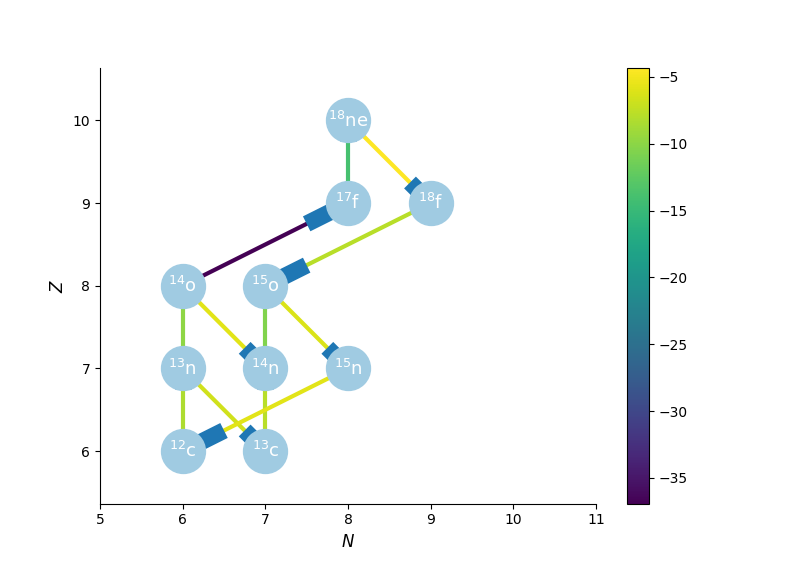
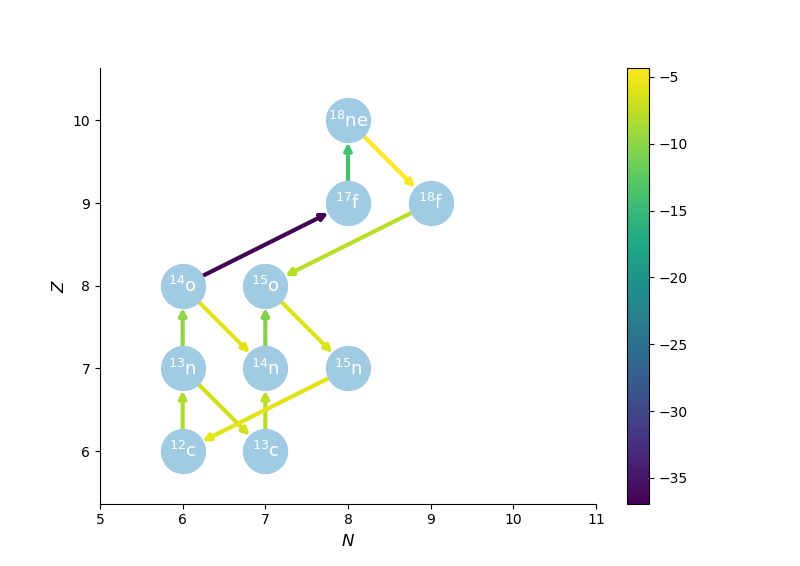

Networkx arrows
1 Before contribution
- Previously,
networkxa popular network analysis package in python didn't have arrows to draw directed edges. It used rectangles instead, this was very ugly and I wanted to have my first real contribution to open source (I had some minor contributions before), so I decided to implement the arrows. - A drawing of a directed graph looked like this:

Figure 1: Old networkx code
2 After contribution
- What I did was first open an issue at the
networkxgithub repository, asking if it would be interesting to add the arrows feature. - When I was told by one moderator that it would be great to have the feature I created a pull-request to implement the code.
- After several back and forth conversations with two moderators, they pulled my code!
- Now, the same drawing of a directed graph looks like this:

Figure 2: New networkx code
3 Conclusions
- I learned a lot of open source coding while doing this contribution.
- As a side effect, I learned a lot of
matplotlib, the library behind all the drawing in my contribution, which was great. - I advice anyone who wants to learn how to code, to just go for a contribution in open source. You are not only learning a great deal of code and methodology, but giving something to the community which is also a great feeling.
4 More Code
Thanks for reading, Check out more snippets!